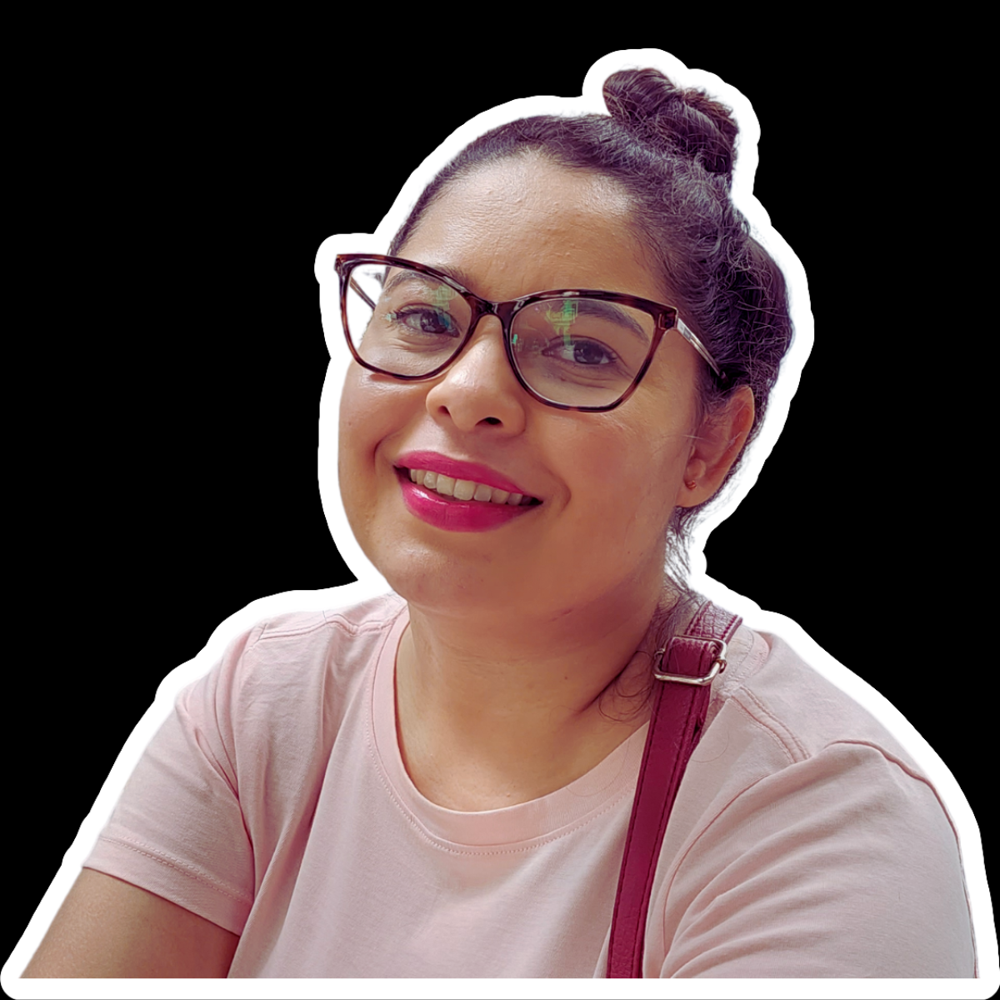

Ayanara Nathane
Estudante de Desenvolvimento Web
Full-Stack
Sobre mim
Oi! meu nome é Ayanara Nathane, seja bem vindas e vindos!
Sempre em busca de conhecimento e novos aprendizados. Atualmente sou estudante de desenvolvimento WEB, Full-Stack. Programar esta sendo um desafio constante, porém, uma experiência muito gratificante. Além de estudar Front End e Back End, também gosto de estudar User experience , pois encontrei nessa área uma forma de melhor suprir as necessidades do usuário. E não posso esquecer da minha formação em Licenciatura em Ciências Sociais, tendo como maior interesses tudo que envolve o ser humano, a sociedade e seu desenvolvimento social.
Contado
Fale comigo